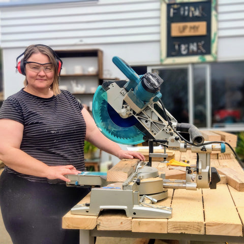

EXPLORE OUR 45+
MAJOR ACTIVITIES
I am sure if you saw the Great Pacific garbage patch, you would get an idea of the waste we throw out as a species. It is just one of the concentrations of plastic and waste debris out there. We always talk about recycling or reusing old stuff to protect the environment. It's probably easier to send away stuff so that it gets recycled. It's slightly more difficult to adapt a DIY approach and reuse old throwaways in a newer way.
DIY Products
There are a lot of benefits when you start thinking about upcycled DIY ideas from trash. For one, you can get rid of clutter around the house;
instead of holding on to that broken rocking chair with the distant hope of fixing it some day, you can turn it into a wall shelf right now.
Fashion Designing
Upcycled clothing is the method of taking old, worn out or damaged materials and transforming them into brand new pieces.
Also referred to as repurposed clothing,
reused clothing and recycled clothing, upcyled garments are becoming increasingly popular in the contemporary fashion industry.
Greeny World Concept
Upcycled papers, stash supplies, and cardboard from the recycling bin can all be of service to create
gift packaging that's unique and fits your personality
OUR PRODUCTS
Upcycling, also known as creative reuse, is the process of transforming by-products, waste materials, useless, or unwanted products into new materials or products perceived to be of greater quality, such as artistic value or environmental value.

CLOTHING
Opportunities through Upcycling
Upcycling, also known as creative reuse, is the process of transforming by-products, waste materials, useless, or unwanted products into new materials or products perceived to be of greater quality, such as artistic value or environmental value.
Be a Clothina
As a eco friendly human being be a upcycled fashion designer.Now is the time! Come and join with us.
Footwear Hunter
Incorporating more eco-friendly features into your fashion choices is a fantastic way to give back to the environment, and these upcycled shoe designs are some creative examples of how average items can be turned into a chic pair of practical kicks.
Be an Inventive
We have huge creative upcycle idea volunteers! Its time to share your idea and be a leading designer in international level.
Our Proud Community Members
The purpose of The ReCreators is to enable our community live more sustainably through creative upcycling. Upcycling reduces consumerism, stopping the extraction of virgin materials and diversion from landfill. It provides local employment through optimising our resources for a new life.

Buffie is a renowned West Auckland upcycler, passionate about woodworking and DIY design
Buffie Mawhinney

Juliette delivers our DIY Beauty & Cleaning products classes. She is a strong believer of sourcing local, organic ingredients and circular packaging.
Juliette Jones
Anis is originally from India and has learned the art of sewing and design in New Zealand. She is an original team member delivering a variety of classes across Tāmaki Makaurau.
Anis Khan